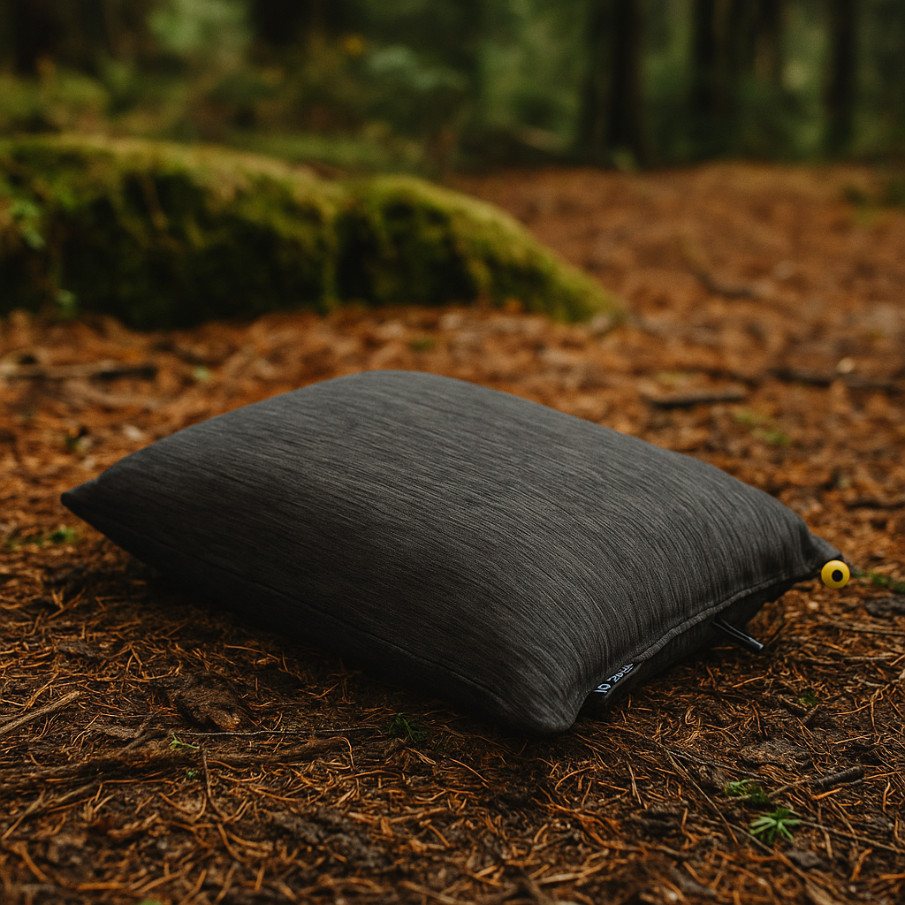

FIRST NIGHT
Sleep and shelter decide the mood
If the tent is confusing or the pad is cold, the rest of the kit has to work uphill. Start with pieces that make the first night predictable.
 By Chris Follin
By Chris FollinGUIDE
A simple starting point for people who want usable camp gear without turning the first trip into a research project. This is about buying the pieces that prevent obvious misery first: a tent that pitches cleanly, a sleep setup that works, enough water, easy food, dependable light, and a few small fixes for common failures.
Beginner gear should be forgiving, simple to use, and hard to hate. I want the first setup to feel stable enough that you can learn what matters before optimizing for niche preferences, packed weight, storage systems, or a vehicle full of random accessories.
The beginner mistake is buying the exciting extras before the trip-breaking basics. Build from the night outward: sleep, shelter, water, food, light, then comfort.
FIRST NIGHT
If the tent is confusing or the pad is cold, the rest of the kit has to work uphill. Start with pieces that make the first night predictable.
FIRST MORNING
A basic stove, a water container, and a cooler do more for beginner confidence than most specialized camp gadgets.
FIRST PROBLEM
Extra stakes, a real light, a few repair bits, and a calm setup routine prevent the kind of minor trouble that makes new campers feel outmatched.

A simple freestanding shelter that keeps setup from becoming the first stressful job of the trip.

A sleeping pad choice for beginners who need ground insulation and comfort before chasing ultralight gear.

A small comfort upgrade that helps new campers sleep more normally instead of improvising with a jacket.

A low-drama stove for hot coffee, simple meals, and avoiding the beginner trap of making every meal complicated.

A camp lantern that makes cooking, packing, and finding things after dark feel normal instead of chaotic.

The beginner water move: enough capacity for drinking, cooking, rinsing, and not treating every refill like a crisis.

A straightforward cooler that keeps beginner meals realistic and lets the weekend feel less improvised.

Aluminum Y-beam stakes that fix one of the most annoying beginner failures: weak stock stakes in real ground.
The job is not to impress anybody. The job is to keep the first trips from feeling confusing, miserable, or more complicated than they need to be. Good beginner gear reduces avoidable failure points before it tries to optimize anything fancy.
FORGIVING
Beginner gear should not punish normal mistakes too hard. The right tent, pad, stove, and lantern all buy margin while someone is still learning their routine.
SIMPLE
This is why I like clean, dependable pieces instead of complicated systems. If setup takes too much explanation, the gear is probably doing too much for a first kit.
USEFUL
Sleep badly, eat badly, run short on water, or fumble in the dark, and the whole trip feels worse than it needed to. This list is built around fixing those pain points first.
Most beginner mistakes are not about buying too little. They are about buying the wrong kinds of things too early, usually because the exciting gear feels more fun than the foundational gear.
TOO MUCH STUFF
Big category coverage sounds smart until half the kit is filler. A smaller set of better basics usually performs better and teaches you faster.
THE WRONG ORDER
A cute accessory does not rescue a cold pad, weak stakes, or a tent you hate pitching. Fix the core system first, then add extras.
OVER-OPTIMIZING
You do not need a fully customized philosophy before your first few decent trips. Start stable, then let real use tell you what deserves an upgrade.
A good beginner kit leaves room in the budget and the vehicle. These can wait until you know they solve your actual version of camping.
SPECIALTY COOKING
Start with simple meals, a stove, water, and a cooler. Add grills, griddles, and full kitchen bins after you know how often you cook that way.
DECORATIVE COMFORT
Lights, pillows, chairs, and tables are useful, but they should not crowd out sleep insulation, weather protection, water, and food safety.
HYPER-SPECIFIC GEAR
Do not build a desert, snow, backpacking, and overland kit at the same time. Buy for the next real trip, then branch out carefully.